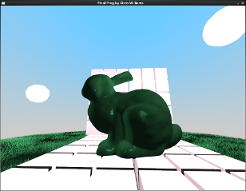
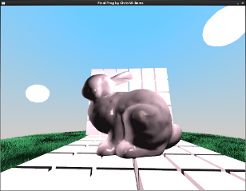
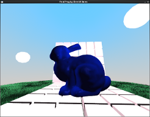
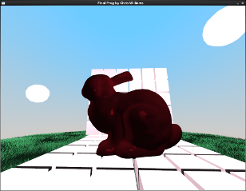
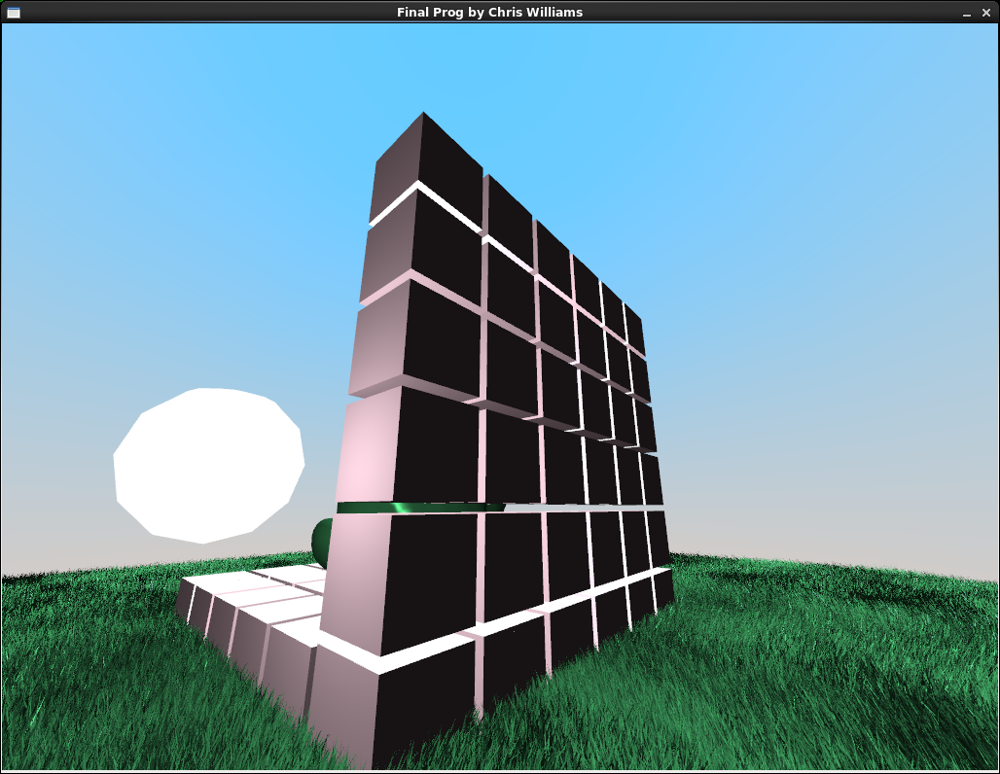
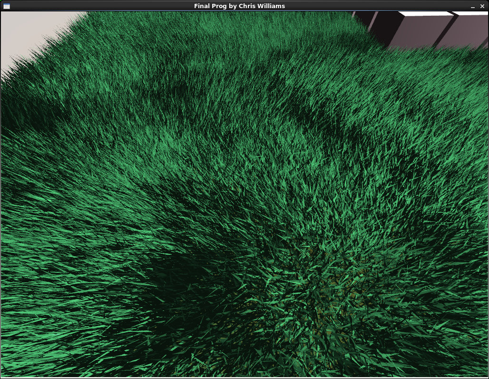
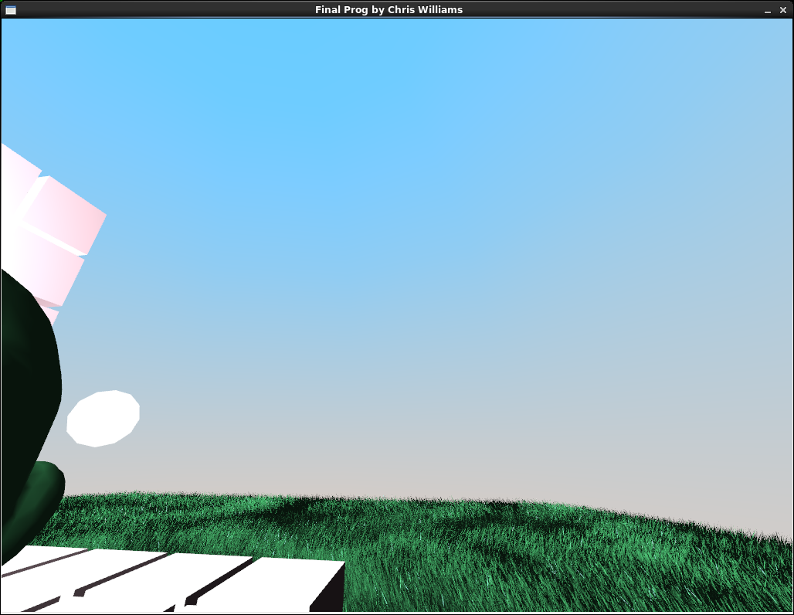

My final project contains technical accomplishments such as three point-source phong lighting (all of which travel along a parametric curve), a bunny with interchangable materials, a hierarchical model of cubes that form a shrine, grass that flows independtly from each other by utilizing shear transforms, a sky box with a gradient shading, and a random floor pattern created from Perlin noise (that is hidden beneath the grass, but there is a way to show it as shown below). Also, I incorportated collision detection so the user can't walk off the ground and a "head bobbing" animation while you walk.
Three spheres orbit around the bunny and emit light to light the world. The bunny, grass, and shrine of cubes are all lite up depending on the current position of the three spheres. From my research online, I realized that adding more point-source lights simply involves adding the calculated diffusal and specular to each other without averaging them out.
The bunny's material is changed because different diffusal, specular, ambient, and shininess light values are sent to the GPU. You may swap through several preset material colors by pressing X. All of the available colors are shown below:
|  |  |  |  | |||
| Emerald | Gold | Sapphire | Ruby |
The cubes that construct the shrine are hierachically modeled together with a matrix stack they may all move as one entity. My artistic side decided to not animate it or cause it to move as if it was hierarchically modeled since the cubes are supposed to represent a shrine commemerating the bunny. Below is an image of the back-side of the shrine while the light sources are on the opposite side:
I was originally hoping to render the grass by utilizing alpha layer texturing mapping as describe in this tutorial. However, I was unable to port the texture code supplied to us for Lab 10 in my final project. Instead I found a grass object file here that I used to populate the world. In order to get the flowing effect, I applied a shear transformation to each object. Furthermore, to keep them all from flowing uniformly I added an offset to my time-counter variable for each object I'm rendering. Here is a close up picture of the grass:
Just like the grass, I was originally hoping to apply a texture to the sky box (the sphere surrounding the scene), but it was not meant to be. Instead, I opted to do some nice, subtle shading to apply a daytime gradient of a sky. I check for the Y position of the sphere and calculated the percentage it is from the middle of the sphere (ground level) to the top of the sphere. From there, I take the difference in that percentage and apply the correct amounts of sky-blue color and white color to create the gradient. Following suit, here's a picture of the sky:

Before I incorporated the grass models, I was messing around with generating a textured floor of dirt and patches of grass based on Perlin noise principles. I didn't expect to get too far, but I actually ended up with something that looked pretty nice! Just like the sky box gradient, I calculate how much grass-green vs dirt-brown color should be given to a certain patch of ground. However, instead of basing the gradient on the Y position, I created a noise function in my fragment shader that takes a vec2 as a seed. That vec2 is the position of the ground from the bottom-left on scale from 0.0 to 1.0 (also known as the uv-vector). To try and create a smoother gradient across the entire surface, I averaged the values nearby a spot. However, I noticed this creates a cool checkered landscape if certain variables are kept as integers. I was satisfied with it as an "easter egg" of sorts, so I decided to keep it as it was. The user my remove the grass objects to view the Perlin noise generated ground by pressing G. Here is a picture of the grass-less landscape: